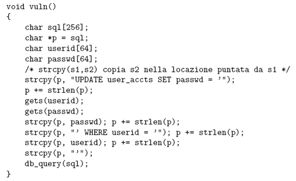

Torna alla pagina di Sicurezza & Privatezza
:: Appello d'esame di Sicurezza e Privatezza - 11/06/2007 ::
Domande
Rispondere brevemente ma in modo completo alle seguenti domande.
- Descrivere i concetti di separazione statica dei privilegi e di separazione dinamica dei privilegi, mostrando anche un esempio per ognuno di essi. Quale di questi due concetti è specificatamente supportato dal modello Chinese Wall? Si richiede di motivare la risposta.
- Descrivere l’attacco SYN-flooding, come funziona e quali contromisure possono essere adottate.
- Descrivere in che modo PGP garantisce l’autenticazione del mittente.
- Si supponga di avere n utenti ed m oggetti. Rispondere alle seguenti domande.
a)
Quante sono le celle della matrice di controllo degli accessi?
Quante sono le ACL?
Quante sono le capability?
Nel caso in cui si aggiungesse un nuovo utente al sistema, quante sono, nel caso peggiore, le ACL che devono essere modificate?
Quante sono le capability che devono essere create?
b)
Alice non vuole più che gli altri utenti siano in grado di modificare un suo oggetto. Cosa deve fare alice per revocare l’accesso a tale oggetto?Si confronti lo sforzo necessario nel caso in cui il sistema sia basato su ACL oppure su capability.
- Si consideri la seguente porzione di codice C:

Si richiede di rispondere alle seguenti domande:
a)Illustrare in che modo un attaccante potrebbe realizzare un attacco di tipo denials of service impedendo l’accesso al sistema da parte di tutti gli utenti registrati nella tabella user-accts.
b)Quali sono le tecniche che possono essere adottate per evitare l’attacco descritto nel punto precedente?
SOLUZIONE
1.
La separazione dei privilegi deriva dal principio per cui nessun utente dovrebbe essere fornito di privilegi sufficienti per poter fare cattivo uso del sistema.
Separazione Statica dei Privilegi: consiste nell'assegnare a priori le autorizzazioni in modo da non dare troppi privilegi ad un singolo utente. Ad esempio una politica tale che gli utenti appartenenti alla categoria "impiegato" non possono accedere a documenti appartenenti alla categoria "top secret".
Separazione Dinamica dei Privilegi: in principio l'utente non ha limitazioni, ma i suoi privilegi vengono ristretti man mano che compie operazioni. Quindi l'utente è libero di scegliere quali accessi fare (non tutti), il sistema gli negherà gli altri di conseguenza. Ad esempio una politica tale che in principio chiunque può leggere qualunque documento, ma nel momento in cui legge il Necronomicon non può più avere accesso a nessun file di qualsiasi altro autore.
Il Chinese Wall è una politica mandatoria che applica una separazione dinamica dei privilegi, infatti inizialmente ciascun utente può accedere a qualsiasi oggetto, mentre le restrizioni si attivano una volta che l'utente ha effettuato l'accesso ad un oggetto e vengono applicate agli oggetti che si trovano all'interno della stessa classe di conflitto di interessi, ma non nello stesso company dataset.
2.
Il SYN flooding è un attacco nel quale l'attaccante genera un flusso di pacchetti con il flag SYN attivo e con l'indirizzo IP spoofato, per non rivelare il vero indirizzo IP da cui sferra l’attacco e per rendere i pacchetti SYN indistinguibili dai legittimi pacchetti SYN.
Con questo tipo di attacco la coda delle connessioni half-opened dello stack TCP/IP viene saturata, quindi la vittima non accetterà ulteriori connessioni, anche legittime.
Slide chiarificatrice:
Contromisure:
Gli stack moderni sono resistenti a questo tipo di attacco.
SYN COOKIE: il server prepara un cookie la cui integrità è garantita attraverso meccanismi di firma, con informazioni relative alla connessione, che rispedisce al client. In questo modo l'allocazione delle risorse viene posposta finché non si riceve il terzo pacchetto (ACK).
3.
4.
a)
- Celle della matrice del controllo degli accessi: n*m
- Se si intende le righe della ACL: m
- Se si intende le righe della capabilty: n
- caso peggiore: m
- 1
b)
- ACL è sicuramente più efficiente per le revoche relative ad un oggetto: per Alice sarà sufficiente eliminare la riga relativa alla risorsa a cui non vuole più consentire l'accesso da parte degli altri utenti.
Capability invece è più orientato ai soggetti, quindi per revocare l'accesso all'oggetto Alice dovrà eliminare per ciascun utente l'elemento dalla lista delle operazioni consentite che riguarda la risorsa in questione.
5.
6.
Torna alla pagina di Sicurezza & Privatezza